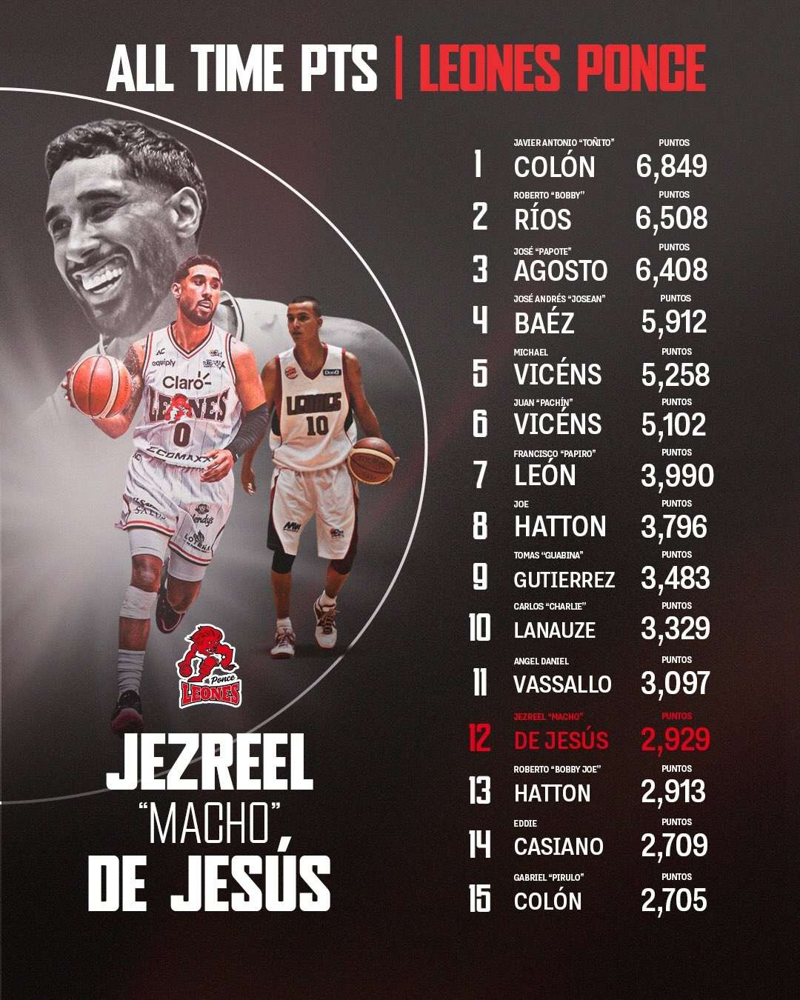

Top 3 Anotadores
- Toñito Colón - 6,849 puntos
- Bobby Ríos - 6,508 puntos
- Papote Agosto - 6,408 puntos

Tabla de Anotadores
Los 15 jugadores con más puntos en la historia del equipo:
| # | Jugador | Puntos |
|---|---|---|
| 1 | Toñito Colón | 6,849 |
| 2 | Bobby Ríos | 6,508 |
| 3 | Papote Agosto | 6,408 |
| 4 | Josean Báez | 5,912 |
| 5 | Michael Vicéns | 5,258 |
| 6 | Pachín Vicéns | 5,102 |
| 7 | Papiro León | 3,990 |
| 8 | Joe Hatton | 3,796 |
| 9 | Guabina Gutiérrez | 3,483 |
| 10 | Charlie Lanauze | 3,329 |
| 11 | Ángel Daniel Vassallo | 3,097 |
| 12 | Macho De Jesús | 2,929 |
| 13 | Bobby Joe Hatton | 2,913 |
| 14 | Eddie Casiano | 2,709 |
| 15 | Pirulo Colón | 2,705 |
Roster 2026
Plantilla bajo el coach Carlos Rivera:
- #00 - Macho De Jesús (Base/Escolta)
- #1 - Terence Davis (Escolta)
- #4 - Jordan Murphy (Ala-Pívot)
- #7 - Johned Walker (Escolta)
- #11 - Christian Negrón (Ala)
- #3 - Jalen Crutcher (Base)